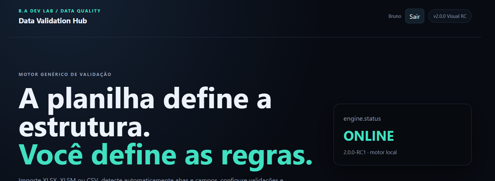
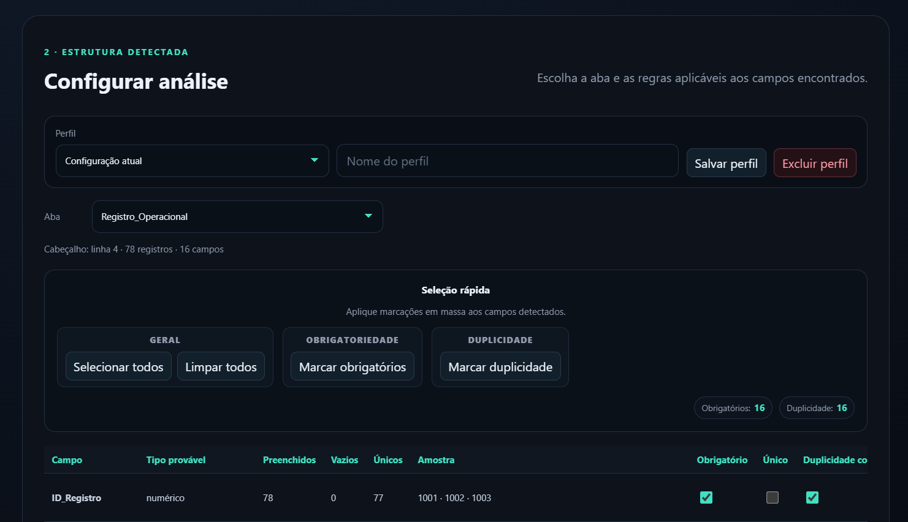
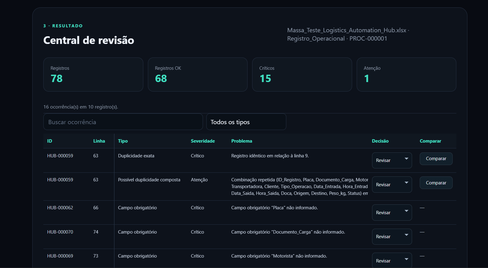
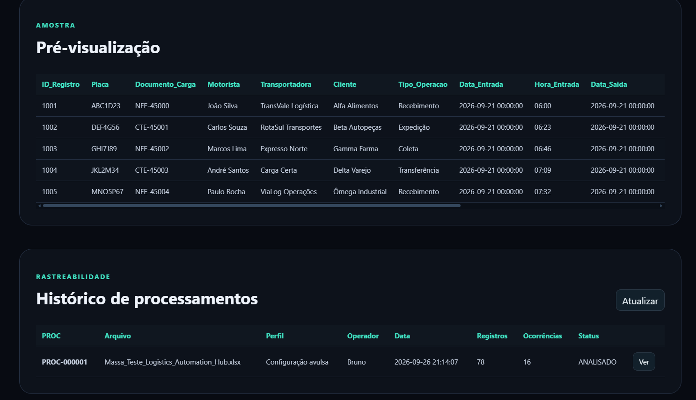

Análise estruturada
Leitura e avaliação das planilhas preservando o contexto dos registros.
CASE · V2.0.0
Motor de validação e tratamento de planilhas criado para identificar inconsistências sem substituir decisões humanas em casos ambíguos.
VISÃO GERAL
O foco do projeto é qualidade de dados com rastreabilidade. Repetições isoladas não são tratadas automaticamente como duplicidade e situações incertas permanecem disponíveis para revisão humana antes da saída final.
Leitura e avaliação das planilhas preservando o contexto dos registros.
Ocorrências podem ser mantidas, revisadas ou removidas com decisão explícita.
Identificação consistente para manter rastreabilidade durante o processamento.
Execuções e decisões permanecem registradas para consulta posterior.
Geração de arquivo final após a etapa de validação e revisão.
Arquitetura preparada para apoiar outros fluxos de dados e automações.
ARQUITETURA
Uma visão resumida das principais camadas e tecnologias utilizadas na solução.
INTERFACE
Capturas reais da versão homologada, mostrando a interface inicial, a configuração das regras, a revisão humana e a rastreabilidade dos processamentos.




CÓDIGO & DISTRIBUIÇÃO
O código-fonte e a documentação estão disponíveis no GitHub. A versão homologada para Windows é distribuída separadamente pela Release V2.0.0.